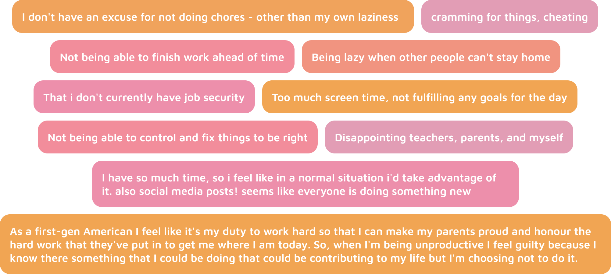
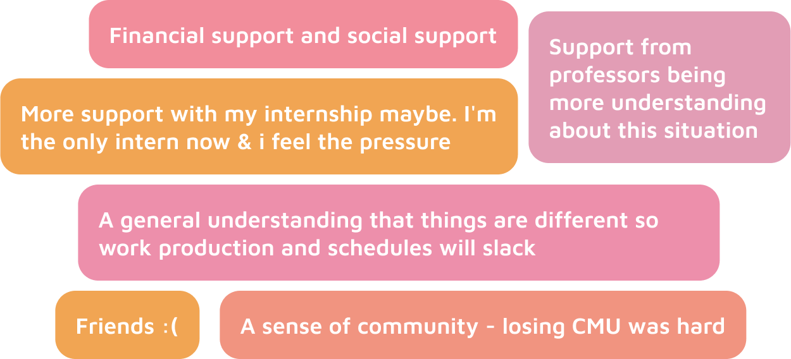
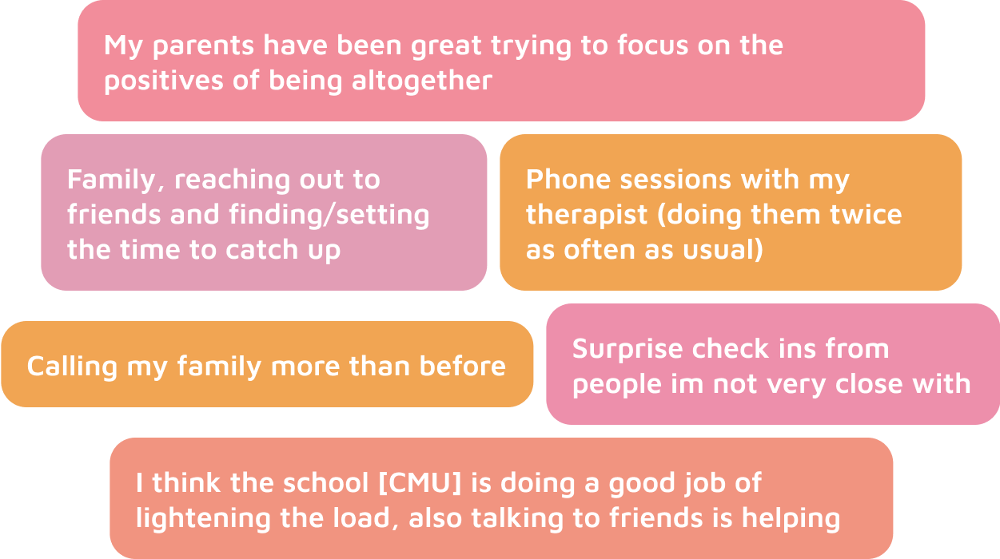
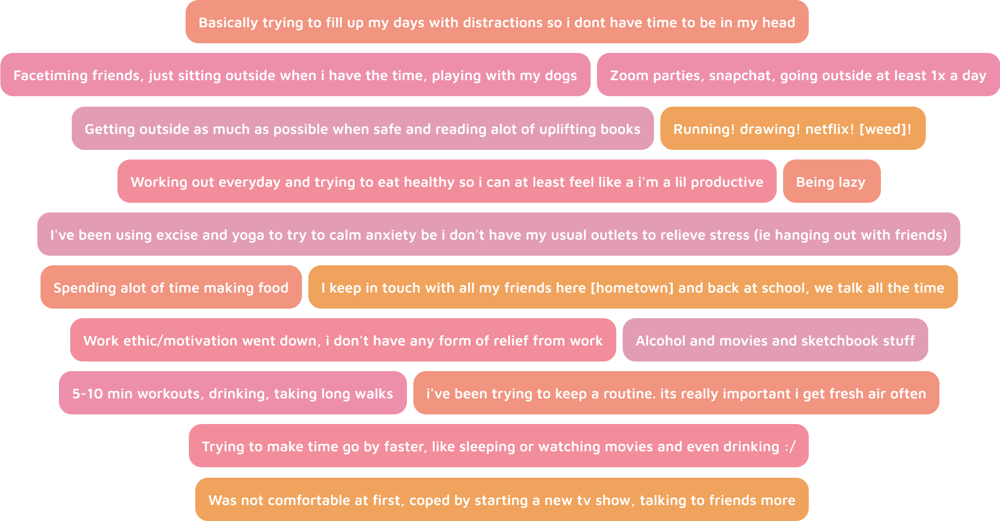
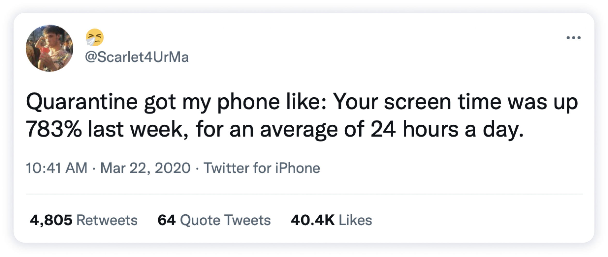

01. Context
COVID-19 is not the rapid apocalypse Hollywood loves, but it is a monumental cultural period that is changing the way we live. The level of restriction put on individuals ranges in severity and duration under different national and local governments, but what remains the same for all is this is hard.
I began research by looking into peopleʼs emotional state and asking how theyʼre dealing with quarantine as individuals - exploring routine and habits lost or gained during this time.
02. Research
Surveys and research was done through Instagram story poll functions as a way to reach people where they already where ... social media.
How productive have you felt during the quarantine?
Absolutely zero motivation
Absolutely zero motivation
Productivity star
Productivity star
Do you feel any guilt about your productivity levels right now?
Absolutely none
Absolutely none
Tons
Tons
Followed with ... “What are some guilt drivers?”

Most, 66%, said they were getting the support they needed, but 34% said they were not getting the support they needed. Not to mention those who felt they were not getting proper support would be less likely to respond to non-anonymous polls.
What kind of support do you feel like you're missing?

What kind of support do you feel like you're missing?

Most responders, 71%, said they gained a new hobby or habit during quarantine.
However, 65% of people also said they lost a hobby or habit during quarantine.
Overall ... healthy or not, here's how people have been coping:

I also performed four long form interviews with peers:
- Early professional in the entertainment industry, graduated CMU 2 years ago, male
- Freshman drama student at CMU, female
- Junior International Relations and Politics Student, currently “abroad” in Washington D.C.
- Group interview with three college age sisters and single mother, the freshman and junior are student athletes at St. Mary's College and the senior is in Dietrich at CMU
How might we reframe how we see productivity during this time and what can we create to best foster motivation and productivity in a healthy way for individuals?
04. Solution
A conversational user interface agent that acts as a verbal journal and support system for those living alone during COVID-19.
There are three main functions of the CUI:
- A Morning Check In to set the dayʼs intention and priorities.
- An Evening Check In to serve as an evening reflection and adaptations
- “Random” Check Ins acting as in the moment updating and reflections
Introducing: Quarpanion
A conversational user interface “buddy” to act as a support system for those living alone. Whether in quarantine or beyond.
At designated, morning and evening, as well as random times through the day, the CUI will active and preform a a check in conversation.
Unless the user says they are busy, the CUI will prompt activities to foster mindfulness:
- meditation
- breathing exercises
- guided or unguided journaling
- guided examples: gratitude practice, planning - day, year, next milestone, day summary
- setting a daily intention or mantra
- quote reflection
- fear setting, thought challenging, negative visualization, etc.
Target User Demographic:
- College age to early stage young professionals
- In between new found independence and stability found in later life milestones (marriage, etc.)
- People who are living solo are the main or with peers in same stage of life
- Those currently working remotely or out of work individuals
04. Solution

People want to reduce screen time
We are all very aware of the pitfalls of too much screen time - but in a time where you are confined to your home and the only windows to the world are screens.
Voice is powerful
Talk therapy, self talk, manifesting - the physical action of speaking aloud spurs different cognitive functions allowing you to communicate and solve complex stressors.
Ability to mimic the intimacy of a roommate
There was a notable difference in mental states when talking to people who lived alone versus those who went home to family or had roommates. In a time where it is unable to be physically around people, an augmented roommate may be a good shot.
06. Expansion
Life will likely not go back to “normal” as we know it.*
Even with a "post-Corona" world, times are changing:
- Increase of primarily home-based workers and increasing WFH days
- Marriage rates are lowering and age of those who marry is increasing
- Increase in one person homes and percentage of Americans living alone
Forward Ideas: shift into different demographics - older individuals + teens
*Note: Remember when this was a controversial opinion back in April?